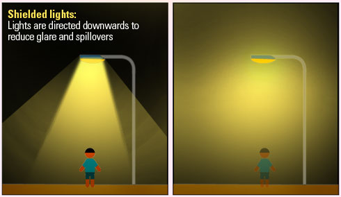
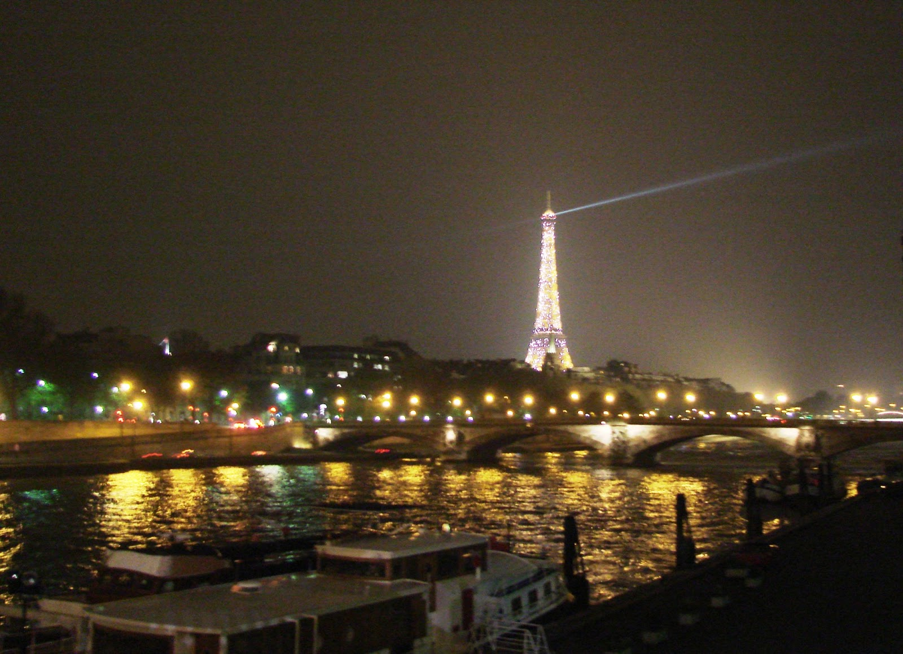

Felizmente, comparada a outros tipos de poluição, a poluição luminosa é uma das mais facilmente remediadas. A iluminação correta é aquela em que a luz ilumina a área que interessa iluminar. Se cada fonte de iluminação refletir para baixo a luz que iria para os lados e para cima, melhora-se a iluminação da área com menor potência e consumo de energia. A ilustração abaixo exemplifica essa medida.
A substituição por lâmpadas mais eficientes diminui o consumo de energia e ilumina mais. Para o sistema de iluminação pública, uma das lâmpadas mais eficientes são as de vapor de sódio de alta e baixa pressão, que possuem um tempo de vida longo, baixo consumo energético e ótima eficiência se comparadas aos outros modelos. As lâmpadas LED têm sido apontadas como outra opção por consumirem pouca energia e serem direcionadas, porém, essas lâmpadas emitem uma luz mais forte que as lâmpadas comuns. A instalação de sensores de presença em alguns locais também diminui o gasto energético, iluminando a área apenas quando ela necessita ser iluminada.
Algumas medidas já vêm sendo tomadas. Em Paris, por exemplo, da 1h às 7h da manhã, luzes de lojas, escritórios e fachadas da cidade das luzes devem estar apagadas, excetuando áreas turísticas como a Torre Eiffel, que pode ficar acessa.
Flagstaff, no Arizona (EUA), é a primeira cidade grande moderna com céu escuro, em que medidas foram amplamente tomadas para diminuir a poluição luminosa, como o direcionamento das luzes e sua proteção para que a luz não se disperse e a limitação da iluminação emitida por acre. Ainda assim, a poluição luminosa aumenta em 20% a cada ano, na maioria das vezes devido à associação entre segurança e luz.
No Brasil, existe a necessidade de uma legislação nacional, fixando parâmetros a fim de evitar e corrigir a poluição luminosa. Além de medidas normativas, a conscientização da população é fundamental. O Laboratório Nacional de Astrofísica preparou uma apostila que alerta e fornece informações sobre a poluição luminosa e as formas de combatê-la. Eles apresentam uma “regra de ouro” que todos nós deveríamos seguir: “iluminar apenas o que for preciso e apenas durante o tempo que for necessário”.
Ações como as citadas podem economizar energia, dinheiro e diminuir os danos para o meio ambiente. E não apenas esses benefícios. Diminuir essa poluição pode nos devolver a capacidade de olhar além de nós mesmos e vislumbrarmos a imensidão do espaço.